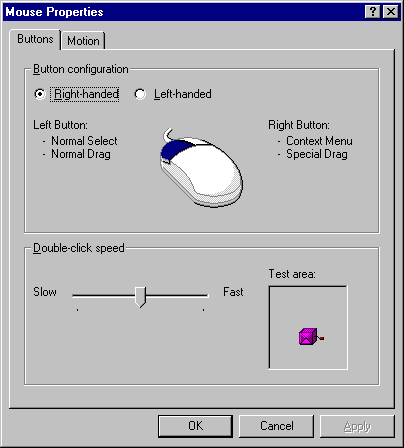
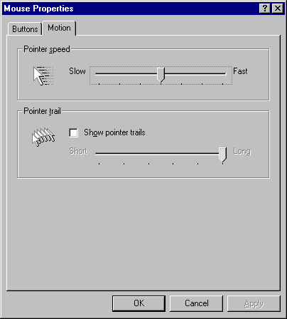
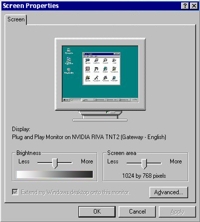
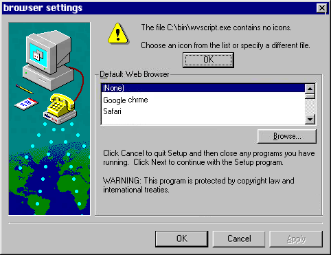

System preferences
PC visual display settings
The ‘system preferences’ allows the user to personalize their home pc visualy and the functionality of your machine.
This allows your pc to be unique!
System preferences settings allow the user to change the following
- desktop and screensaver
- mouse properties
- display settings
- Web Browser preferences
desktop and screensaver
the desktop of your personal machine can be changed into any image you desire. the desktop is the primary page of your pc and stores all the accessible applications.
the "screensaver" is an inbuilt funtion which functions when the user has been inactive and hasnt interacted with their machine in a while. The use of the screensaver is to primarily reserve power usage while inactive. When the screensaver is activated, an image is displayed until the user returns ans interacts with their home pc.
how to personalize your pc desktop and screensaver settings
Within your PC settings you must select the option titled "display properties".
Once you selected the "display properties" option, you will be directed to a page with two tabs, one is titled 'background' and the other is titled 'screen saver'. Your machine desktop will have a window that look like this:

on the 'Background' tab you can select a pre generated desktop provided by the pc manufacturer company, or, you can select the "browse" button in order to search through the files stored on your pc. There is a desktop icon in the middle of the window which displays a preivew of the your desktop. once you have selected your desired image, press apply and you may exit the page.
A simmilar page will be present if you select the 'screen saver' tab.
mouse settings
the computer mouse is an essential tool which allows you to select files and maneuver throughout your machine at ease. The user is granted the abbility to munipulate the mouse properties based on the users preferences.
how to change your mouse settings
Within your PC settings you must select the option titled "mouse properties".
Once you selected the "mouse properties" option, you will be directed to a page with two tabs, one is titled 'buttons' and the other is titled 'motions'. Your machine desktop will have a window that look like this:

on the 'buttons' tab will see a section titled "button congifuration", which allows you to select which hand you primarily use, the mouse settingss will vary based on your dominant hand choice.
underneath the "button configuration" section, there is another section titled "double-click speed". the user must adjust the slider to their prefered speed which the machine processes the user has double clicked on their mouse.
the next tab is titled 'motion' and allows the user to muniplate the mouse speed. Once you selected the 'motion' tab, Your machine desktop will have a window that look like this:

on the 'motion' tab will see a section titled "pointer speed", which allows you to munipulate the mouse sensitivity the user profers.the 'pointer speed' can be adjusted with the use of the slider.
underneath the 'motion' section, there is another section titled 'pointer trail', which munipulates the trail which the pointer leaves behind. The user can adjust the slider until satasfied. Once you are done changing your settings, press apply and you may exit the page.
displa settings
the display settings involve the screens brightness settings and resolution settings.
how to change your display settings
Within your PC settings you must select the option titled "screen properties".
Once you selected the "screen properties" option, you will be directed to a single page titled 'screen'. Your machine desktop will have a window that look like this:

on the 'screen' tab will see a section titled "brightness", use the slider provided to select a preferable brightness.
underneath the "dvreen" section, there is another section titled "screen area". The slider munipulates the screens resolution size, edit this until you discover an optimal resolution which corelates with the monitor.
There is a desktop icon in the middle of the window which displays a preivew of the your desktop. once you are happy with your settings, press apply and you may exit the page.
WEB BROWSER PREFERENCES
The web browser is the tool needed to explore the internet. however, some preform better then others, it is recommended to explore some web browsers to see which preforms to your standards. remember, always be safe while on the internet and dont click links which may harm your computer.
how to change your default web browser
Within your PC settings you must select the option titled "browser settings".
Once you selected the "browser settings" option, you will be directed to a single page. Your machine desktop will have a window that look like this:

on this page you will see a section titled "button congifuration",here you can select your prefered web browser, or you can click the browse button and select a different we browser you have downloaded.
once you are happy with your settings, press apply and you may exit the page.
Our favourite quote
"The product is you" - AdBusters'